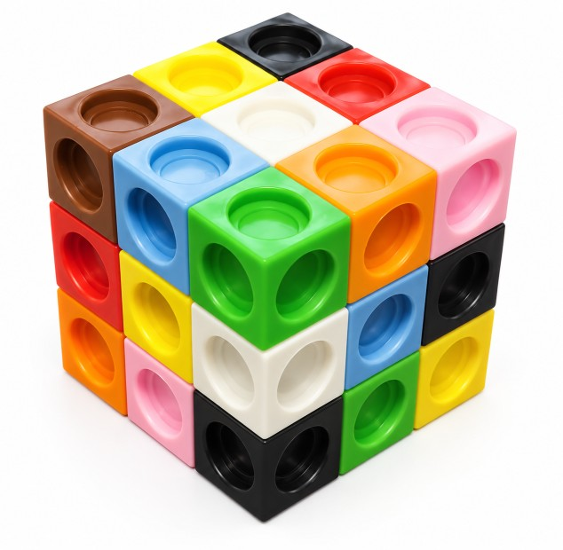

Construimos un cubo 3 × 3 × 3 con policubos de colores.

Si tienes 27 cubos pequeños, 3 de cada uno de nueve colores, ¿puedes construir un cubo de 3 × 3 × 3 de manera que cada cara del cubo grande contenga uno de cada color?
En la imagen, la cara superior y la cara izquierda tienen una unidad de cada color.
Por desgracia, la tercera cara tiene dos cubos verdes, dos negros, ninguno rojo y ninguno marrón, por lo que no es una solución válida.
Puedes explorar este problema utilizando cubos. Si no tienes cubos, puedes registrar tus intentos en papel cuadriculado, dibujando y coloreando cada capa, o utilizar la actividad interactiva que aparece a continuación.
Inicio